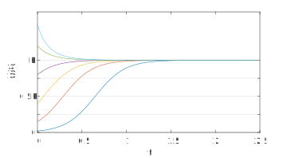
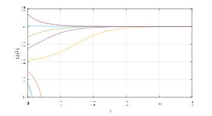
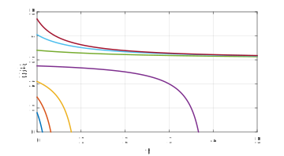
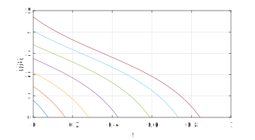

Section 1.9 Logistic equation
¶Refer to section 1.7 of the text (pp. 53-57).
Say \(y(t)\) represents a population of bacteria. (There is always a whole number of bacteria, of course, but we'll allow real values. For large numbers that shouldn't matter.) If we assume that each bacterium produces offspring and ages at a constant rate, the result is a constant net per capita growth rate:
\begin{equation*}
\frac{1}{y} \dd{y}{t} = a\text{.}
\end{equation*}
If \(a\gt 0\text{,}\) then this is a recipe for exponential growth, a la \(y'=ay\text{.}\)
There are a lot of assumptions behind that model, but perhaps the most glaringly suspect one is that it supposes an endless supply of food and space, allowing population to grow without bound, forever. An improved model would decrease the per capita rate as the population increases. The simplest way to do so is to let \(b\gt 0\) be another positive parameter, and define
\begin{equation}
\frac{1}{y} \dd{y}{t} = a - by, \qquad or \dd{y}{t} = ay - by^2 \text{.}\label{eq-logistic}\tag{1.9.1}
\end{equation}
This is the logistic equation.
Subsection 1.9.1 Steady states
¶The logistic equation is our first real look at a nonlinear ODE. We'll begin with the steady states. We have \(f(y)=y(a-by)\) with roots \(y=0\) and \(y=a/b\text{.}\) Since \(f'(y)=a-2by\text{,}\) we have that the former steady state is unstable and the latter is stable. The stable equilibrium value \(K=a/b\) is important and known as the carrying capacity of the environment. We will find later that this value is the long-term fate of the system for any positive initial condition.
We can get creative and show that the halfway value \(y=K/2\) is also special. Still without knowing explicitly what \(y\) is, we can differentiate the ODE and use the chain rule to obtain
\begin{equation*}
y'' = ay'-2byy' = (a-2by)(ay-by^2)\text{.}
\end{equation*}
This is zero for \(y=K/2=a/2b\text{,}\) suggesting that \(dy/dt\) has an extreme value there.
Subsection 1.9.2 First solution method: Easy but lucky
¶When it comes to solving nonlinear ODEs, we take success wherever we can find it. One source of "lucky" solutions is the idea of variable substitution, and the logistic equation is a nice case study. Define \(z=1/y\text{.}\) From the chain rule we have \(z'=-y^{-2}y'=-y'z^2\text{.}\) The logistic equation converts to
\begin{equation*}
-\frac{z'}{z^2} = \frac{a}{z} - \frac{b}{z^2}\text{,}
\end{equation*}
or \(z'=b-az\text{.}\) This is a linear equation! It even has constant coefficients. In terms of \(z\text{,}\) we jump right to the solution:
\begin{equation*}
z(t) = e^{-at}z(0) - \frac{b}{a} \left( e^{-at}-1 \right) = \frac{e^{-at}(Kz_0-1)+1)}{K}\text{.}
\end{equation*}
Finally, with \(y=1/z\) we get
\begin{equation}
y(t) = \frac{Ky_0}{e^{-at}(K-y_0)+y_0}\text{.}\label{eq-logistic-solution}\tag{1.9.2}
\end{equation}
You can easily check that \(y(0)=y_0\text{.}\) Moreover, \(y\to K\) as \(t\to \infty\text{.}\) As Figure 1.9 of the text shows, the logistic curve is an S-shaped or sigmoidal curve. You can think of it as a nice, smooth transition between two states (the two equilibria).
a = 6; b = 2;
K = a/b;
f = @(t,y) a*y - b*y^2;
t = linspace(0,2.5,300);
for y0 = K*[0.02 0.15 0.4 0.8 1.2 1.5]
[t,y] = ode45(f,t,y0);
plot(t,y), hold on
end
xlabel('t'), ylabel('y(t)')
set(gca,'ygrid','on',...
'ytick',K*(0:.25:1),'yticklabel',{'0','','0.5K','','K'})

It's not easy to say "why" the variable substitution works out so well here. It's also not something you can expect to happen in most problems. The situation is very much like substitutions to solve integration problems: when they work, they're golden, and when they don't, you try something else.
Subsection 1.9.3 Second solution method: Systematic but long
¶The logistic equation, being of the particular form \(y'(t)=f(y)\text{,}\) is known as an autonomous problem. The ODE (not the solution) has no explicit dependence on time. We have a process for solving autonomous equations known as separation of variables. It's based on the rearrangement
\begin{equation*}
\frac{dy}{dt} = f(y) \quad \Rightarrow \quad \frac{dy}{f(y)} = dt\text{.}
\end{equation*}
The right-hand side can be integrated to get \(t+C\text{.}\) If we can integrate the left-hand side, we get a solution formula.
In the logistic equation the separation strategy yields
\begin{equation*}
t +C = \int \frac{dy}{y(a-by)} = \frac{1}{b} \int \frac{dy}{y(K-y)} = \frac{1}{bK} \int \left( \frac{1}{y} + \frac{1}{K-y} \right)\,dy\text{.}
\end{equation*}
That last step was a big one. We converted the single fraction into a combination of partial fractions. To review how that goes, we write
\begin{equation*}
\frac{1}{y(K-y)} = \frac{A}{y} + \frac{B}{y-K}\text{,}
\end{equation*}
and determine \(A\) and \(B\) by clearing the denominators to get \(1=A(K-y)-By\text{.}\) This is an identity for all values of \(y\text{,}\) so we can match powers of \(y\) to get a linear system of two equations. Or we could judiciously plug in \(y=0\) to get \(A=1/K\) and \(y=K\) to get \(B=-1/K\text{.}\)
Any way you get them, the partial fractions are easily integrated to get logs, and the solution follows from there. The details are given in the text. Obviously we have to end up with (1.9.2) again. The success of the separation strategy in general rests on whether we can actually perform the \(y\) integration we set up. As you know, that's no small thing.
Subsection 1.9.4 Harvesting
¶Refer to section 1.7 of the text (pp 59-60).
As a final wrinkle, suppose a population is being reduced at a constant rate due to harvesting. (That may not be realistic as the population dwindles, but we are going for simplicity here.) It's easiest to do the discussion with only one varying parameter, so let's modify the pure logisitc model \(y'=6y-y^2\) to get \(y'=6y-y^2-h\text{,}\) for a positive constant \(h\text{.}\)
We get steady states whenever \(f(y)=6y-y^2-h=0\text{.}\) Since this is a quadratic in \(y\text{,}\) we expect to see either two steady states (distinct real roots), one (double real root), or none (when there are complex roots). The changeover happens at the double root, when \(6^2-4h=0\text{,}\) or \(h=9\text{.}\)
Underharvesting, \(h\lt 9\text{:}\) For example, say \(h=8\text{.}\) The roots of \(f(y)\) are \((6\pm\sqrt{36-32})/2\text{,}\) or 4 and 2, so these are the steady states. It's possible to repeat the partial fractions computation above for this problem, but there's an easier path. Define the new variable \(v=y-2\text{.}\) Then \(v'=y'\text{,}\) and
\begin{equation*}
v' = 6(v+2) -(v+2)^2 - 8 = 6v+12 -v^2 -4v - 4 - 8 = 2v -v^2\text{,}
\end{equation*}
which is a pure logistic equation with different parameters and steady states 0 and 2. The problem can be solved for \(v\) and then turned back into \(y\) by adding 2. So the population will have a logistic or sigmoidal solution between an unstable 2 and a stable 4.
Example 1.9.2
h = 8;
dydt = @(t,y) 6*y - y^2 - h;
tt = linspace(0,5,500);
for y0 = 0.8:0.65:5
[t,y] = ode45(dydt,tt,y0);
plot(t,y), hold on
end
xlabel('t'), ylabel('y(t)')
grid on, ylim([0 5])

Critical harvesting, \(h= 9\text{:}\) There is a double root at \(y=3\text{,}\) and now \(y'=6y-y^2-9=-(y-3)^2\text{.}\) If we change now to \(v=y-3\text{,}\) we get just \(v'=-v^2\text{,}\) which is a nonlinear equation very similar to the one in Section 1.1. It's autonomous and thus can be integrated by separation:
\begin{equation*}
t = \int -\frac{dv}{v^2} = \frac{1}{v} + C\text{,}
\end{equation*}
so that \(v=1/(t-C)\) for arbitrary \(C\text{.}\) From here we get \(v(t)=v(0)/(1+tv(0))\text{.}\) There are two possibilities. If \(v(0)\gt 0\text{,}\) then the denominator is never zero, and \(v\to 0\) (thus \(y \to 3\)) as \(t\to\infty\text{.}\) But if \(v(0)\lt 0\text{,}\) then \(v\to -\infty\) as \(t\to -1/v(0)\text{.}\) We interpret that as a population crash (our model would have to stop at \(v=-3\)). So a large enough initial population will tend toward a nonzero steady state, but if it ever dips below that value, it will die out. We might call this precarious situation "semistable".
Example 1.9.3
h = 9;
dydt = @(t,y) 6*y - y^2 - h;
tt = linspace(0,5,500);
for y0 = 0.8:0.65:5
[t,y] = ode45(dydt,tt,y0);
plot(t,y), hold on
end
xlabel('t'), ylabel('y(t)')
grid on, ylim([0 5])

Overharvesting, \(h\gt 9\text{:}\) The harvested logistic equation has no real steady states. For example, say \(y'=6y-y^2-13\text{.}\) We define \(v=y-3\) and get
\begin{equation*}
v' = 6(v+3) - (v+3)^2 - 13 = -v^2 - 4\text{.}
\end{equation*}
This problem is also solvable by separation, leading to
\begin{equation*}
t = -\frac{1}{2} \arctan \left(\frac{v}{2}\right) + C\text{,}
\end{equation*}
or
\begin{equation*}
v = -2\tan( 2t+C )
\end{equation*}
for a (different) arbitrary \(C\text{.}\) As \(2t+C\to \pi/2\) from the left, this will crash to \(v\to -\infty\text{.}\) Thus the population is doomed.
Example 1.9.4
h = 13;
dydt = @(t,y) 6*y - y^2 - h;
tt = linspace(0,5,500);
for y0 = 0.8:0.65:5
[t,y] = ode45(dydt,tt,y0);
plot(t,y), hold on
end
xlabel('t'), ylabel('y(t)')
grid on, ylim([0 5])
